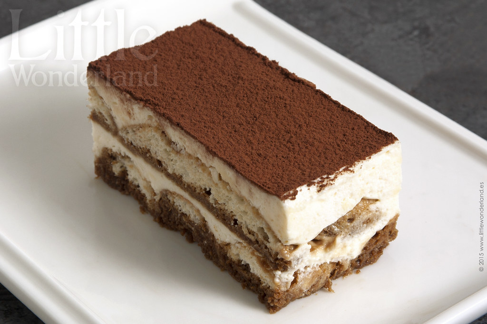

Tiramisu Recipe
Back to Home

A classic Italian tiramisu recipe.
Ingredients:
- 6 egg yolks
- 3/4 cup sugar
- 1/2 cup mascarpone cheese
- 1/4 cup strong coffee, cooled
- 2 tablespoons liqueur (optional)
- 200g ladyfingers (savoiardi)
- 1/4 cup cocoa powder for dusting
Steps:
- Mix egg yolks and sugar in a large bowl until pale and thick.
- Add mascarpone cheese and mix until smooth.
- In a separate bowl, whisk coffee and liqueur together.
- Dip ladyfingers quickly in the coffee mixture and layer them in a dish.
- Spoon half of the mascarpone mixture over the ladyfingers.
- Dust with cocoa powder and repeat layers.
- Chill for at least 4 hours before serving.